SlimHoods Specials SlimHoods 是以太坊区块链上5000 个随机生成的 NFT的集合。 他们都戴着头巾，但每个 SlimHood 都是独一无二的。 它从连帽衫开始，它使用从 10,000 种可能组合中的生成色块
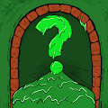 Slimy Snails NFT 欢迎来到 Slimy Snails 的 Opensea 官方合集 - 使用一组 135 个手绘特征随机生成的 5555 个 NFT。拥有 Slimy Snail 可让您获得独家赠品、$SLIME 空投以及在我们的 slimeDAO 中投票的权利。
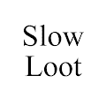 Slow Loot 什么是Slow Loot慢战利品？ 慢速战利品是战利品的免费副本（适用于冒险家）。有 8000 个 Slow Loot 代币可供免费索取。 为什么叫慢战利品？ 很慢，因为所有的
Slow Turtles Official 999 只独特的海龟 Slow Turtles NFT 是 999 只独特的 Turtles 的集合，它们在 Polygon 区块链上团结在一起 每只海龟都是由顶级设计师制作的独特 3D 模型。收藏中有33 只创世龟，持有其中
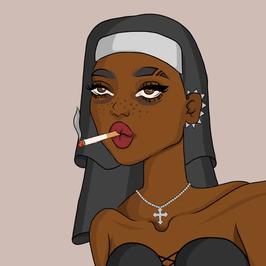 Slutstown.wtf Slutstown.wtf 统计 创建于 3 个月前 693 代币供应 5% 费用 过去 7 天内没有 Slutstown.wtf 出售。 Slutstown.wtf NFT - 常见问题（FAQ） ▶ 什么是 Slutstown.wtf？ Slutstown.wtf 是一个 NFT（非同质
Small Bros Genesis SmallBrosNFT NFT - 常见问题（FAQ） ▶ 什么是 SmallBrosNFT？ SmallBrosNFT 是一个 NFT（不可替代代币）集合。存储在区块链上的数字艺术品集合。 ▶ 存在多少个 SmallBrosNFT
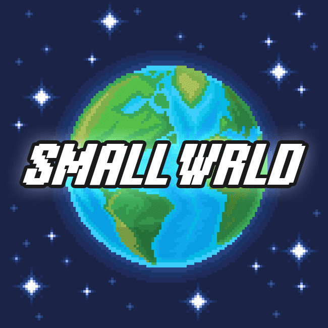 SMALL WRLD Genesis SMALL WRLD 是一家科技创业公司，作为 NFT 项目推出，专注于通过可扩展的 Web3 解决方案推进旅游业。在产品方面，我们从一家基于区块链的旅行社开始，并朝着扩展为著
Smallnaut Smallnaut 统计数据 创建于 6 个月前 6 代币供应 0% 费用 过去 7 天没有售出 Smallnaut。 10,000 名 Smallnauts 在太空中 转发、点赞和评论这条推文的每个人都将获得 1 个 Smallnaut 放下
Smart Interface 智能界面统计 创建于 5 个月前 4 代币供应 10% 费用 过去 7 天内没有售出智能接口。 一个补充人体血清素的舒适世界。 欢迎来到 VICED UNIVERSE！ 世界发生了很
SmartFox.io SmartFOX NFT 系列是由我们的顶级艺术家和开发人员制作的 9,999 个高质量稀有性 NFT 系列，其中包括迪士尼和育碧的令人印象深刻的简历。 每个 NFT 都是在 SmartFOX 生态系统中解锁实
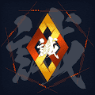 SMC Symbol MakotoKobayashi [SAMURAI cryptos ] NFT 遇上动漫，娱乐新境界开始。它从 7 位艺术家的 7 种武士艺术开始。““SAMURAI cryptos”是一个挑战共创项目为 NFT 时代打造全新动漫
SMILE MIYA CLUB-OFFICIAL Gmarket Smile Pay 的 NFT 从与 Sunmiya Club 的合作项目开始，然后转向一个独特的独立项目。 加入与Sunmiya Club的合作项目“SMILE MIYA CLUB”，先享受福利。 “
Social BEES University Social BEES 是一个全球性的杰出群体，他们认为 Web3 是人们从控制机构中重新获得权力的方式。 终于，经过2年的紧张发展，SBU DAO激活了全球首个自生十亿美元
Society 666 6,666 个恶棍 NFT 的集合，具有 200 多个特征，手绘 - 独特生成的数字艺术，可在 Polygon 区块链上收藏。每个恶棍 NFT 都代表了非常独特的社会 666 俱乐部的会员资格。 成为会员
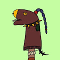 Sock Pops 袜子流行统计 创建于 8 月前 1,569代币供应 5% 费用 过去 7 天没有售出 Sock Pops。 没有路线图，没有 Staking，没有效用，只有 SockPops！
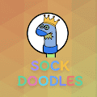 SOCK-DOODLES 袜子模型统计 创建于 7 月前 3,325代币供应 5% 费用 过去 7 天没有出售袜子。 Sock Doodles 替换了 7,77 个搞笑的首个袜子艺术木偶，拼命寻找一个好家。 2000 年 2000 年免费提
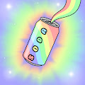 SODA Cans - Society of Derivative Apes 如果在您的钱包中找不到罐头风味，如果选定的苏打水已经用选定的风味进行了变异，或者选定的苏打水没有剩下的变异，则罐头风味将被禁用。 ▶ 什么是苏打
SOLO | MOVE 独奏 | 移动统计 创建于 6 个月前 7 代币供应 10% 费用 没有SOLO | MOVE 在过去 7 天内售出。 SOLO系列的下一步 独奏 | MOVE NFT - 常见问题（FAQ） ▶ 什么是SO
Sombrero Donkeys 阔边帽驴统计 创建于 9 个月前 2,999 代币供应 10% 费用 Sombrero Donkeys NFT 在过去 7 天内售出 3 次。Sombrero Donkeys 的总销售额为 0 美元。一个 Sombrero Donkeys NFT 的平均价格为 0 美元。有
Something Of An Artist Some of An Artist 是 5555 位来自不同社会经济背景的独特艺术家的集合，这些艺术家经过精心设计并绑定到各自的画布上。该系列将与 My Canvas 系列一起发展，并向所有 Web3 梦想
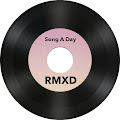 Song A Day RMXD 吉尼斯世界纪录保持者 Jonathan Mann 自 2009 年 1 月 1 日以来一直在写一首歌曲。现在，这些歌曲第Metaplex：通过 Rarible 体验最大的 Solana NFT 生态系统 Metaplex 使 Solana NFT 看起来很简
Sonora Maker Sonora Maker 是基于 Remilia Collective 的 Milady Maker 的衍生项目。作为一个艺术项目，Sonora Maker 对源材料的参与没有任何讽刺意味，也无意模仿或讽刺。Sonora Maker 旨在作为对 Milady
Strokers Golf Club - Genesis Strokers 是一个与众不同的高尔夫社区。NFT 会员资格可让您获得高尔夫必须提供的最佳体验、装备和人员。我们游戏的未来就在这里。 我们于 2021 年 10 月开始建造 S
STRONG DRAGONS STRONG DRAGONS NFT 是 10,000 条独特的 DRAGONS 的集合。龙是出现在世界各地许多文化的民间传说中的传奇生物。这些龙与民间传说相去甚远。这些龙的使命是带你进入财务自由的领域
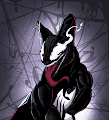 Stryker NFT Season 1 STROKES NFT Strokes NFT 是一个仅由简单轨迹组成的集合。这是一项仅用几笔就可以生成整个艺术收藏的实验。 这个项目是对最近许多低努力项目如何成为现场大玩家的模仿。
Suburban Colorse SuburbanColors 是 3 个独特的 Rebels 和 Robots NFT 的纯赛博朋克艺术和实用工具系列。这是Rebels系列。创世纪系列：[郊区 创世纪] 机器人系列SuburbanColors
SubwayApeClubNFT SubwayApeClubNFT NFT - 常见问题（FAQ） ▶ 什么是 SubwayApeClubNFT？ SubwayApeClubNFT 是一个 NFT（Non-fungible token）集合。存储在区块链上的
Succubus DAO succubus nft 系列包含 10000 张独特的图像，这些图像由 650 多种手工设计的变体生成。 Succubus-NFT NFT - 常见问题（FAQ） ▶ 什么是 Succubus-NFT？ Succubus-NFT 是一个 NFT（N
Suga Squad Suga Sean O’Malley 的官方 NFT 收藏。Suga Squad NFT 项目的目标是创建一个真正的个人社区，他们通过数字媒体支持和联系。代币持有者有资格获得商品掉落、产品赠品以及现
Sugar Skullz by Pandaverse Pandaverse 的下一次进化就在这里。Sugar Skullz 出自建立 Phat Pandaz Genesis Collection 和价值 5 亿美元的休闲大麻帝国的同一头脑。我们对 Pandaverse 的 Sugar Skullz 部门感到非常兴奋，因此我们已经着手
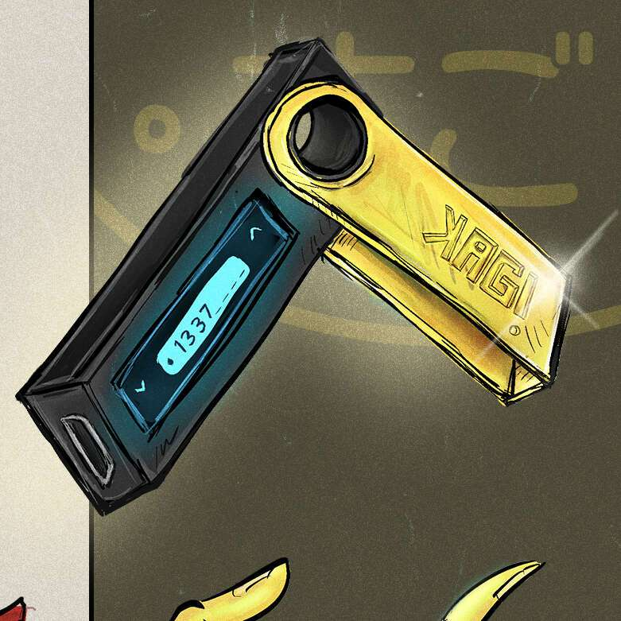 Sugoi NFT NYC 2022 该 NFT 使持有者能够通过 LOGIK 回复进入 Sugoi NFT NYC 的资格。在活动期间，为了保证客人的安全，进入场地始终受总访客人数的限制。 Sugoi 是一个为期 3 天的 NFT/web3 艺术和音乐节
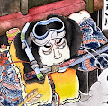 SUIKODEN 108 Suikoden Legends 的现代英雄是对歌川国芳 19 世纪多产作品的当代重新想象。我们的项目是重新构想和当代化歌川国芳多产的 19 世纪作品的合作努力。国芳被广泛认为是日本
Suki Waterhouse 由 Suki Waterhouse 在 Sound 上创建。[在https://www.sound.xyz/sukiwaterhouse 对这]首歌发表评论Suki Suki Waterhouse 通过歌曲记录了她
Summer Bulls Summer Bulls 是 8,888 个可爱又火辣的公牛 NFT 的集合，他们正在元界世界各地度假，可在以太坊兼容的多边形网络上获得。25% 铸造：Summer Bulls 空投给三位幸运持有
Summer Smash 2022 Tickets 这些 NFT 不再可兑换为 Summer Smash 腕带。22 年 6 月 16 日 @ 9:00 PM CT 之后的任何二次销售都严格用于收藏品。享受 ：） 2022 Summer Smash 音乐节是由 Lyrical Lemonade 和 SPKRBX 于 2022 年 6 月 17 日至 19 日在